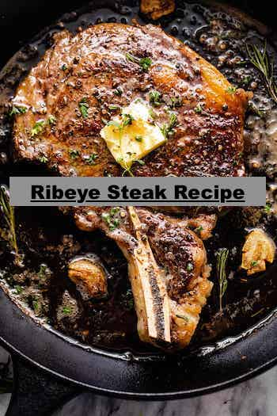

The Best Steak Recipe

Description
Cooking a restaurant quality steak is super simple. The key to cooking a high end steak house steak begins with picking the highest grade you can afford. Most prefer prime cuts but choice is also good.
Ribeye is the ultimate for the best steak flavor however, porter and new york are also good cuts. A quality cast iron pan is a must for cooking the best steak ever. Lastly it is important to REST YOUR STEAK for atleast 10 minutes.
This allows all the flavor and juices to get sucked back in while also relaxing the muscle fibers and softening the steak.
Now that we got some of the essentials out the way lets get you to flavor town!
Ingredients
- 16 oz of your favorite cut steak
- 2 tbs of Butter or Ghee
- 7 cloves of garlic
- Salt and pepper to taste
- 1 tbs of extra virgin olive oil
- 1 sprig of Rosemary
Cooking Method
- Begin by adding salt and pepper to your steak and let it sit for 30 mins room temp
- When the steak is almost done, heat up your cast iron skillet to high heat
- When the pan begins to smoke intensely, slowly add your steak
- Sear all sides several minutes each until you get a nice texture
- Once all sides are seared (including the fat cap), add in your butter and garlic
- Tilt your pan and baste the steak with butter, rosemary and garlic until your preferred doneness is reached
- Check doneness by internal temp
- REST YOUR STEAK!! This is very important to achieve a tender and juicy steak. Rest for atleast 5 mins but preferrably 10 mins
- After resting your steak cut into pencil sized strips against the grain and ENJOY your trip to flavor town!